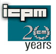
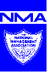
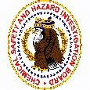
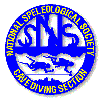

Leslie Dole, 1942-2012. You are missed. May your webpage cary your light into the future.
Leslie R. Dole, Ph.D., CM
|
Senior Chemical Engineering Technologist (retired)
Process Engineering Research Group Nuclear Sciences & Technology Division
Environmental Remediation Consultant
|
Home Page: http://www.lesdole.com |
Professional Training and Development:
Meetings Chaired and/or Organized:
Special Assignments:
Publications
Leslie R. Dole, Ph.D., CM
Les Dole has leadership experience in large national and international programs that have embraced a wide range of technical goals and political agendas.
Dole has a comprehensive background in radioactive and hazardous waste management projects, including the deep geological disposal of high-level wastes and spent fuel. From 1976 to 1980, as a Program Manager in the National Waste Terminal Storage (NWTS) Program Office of Waste Isolation (OWI) at Oak Ridge, Dole managed projects for data collection on nuclide transport and engineering barriers. These studies supported the risk analyses of deep geological repositories for high-level nuclear wastes and spent fuel.
When this program office changed contractors to Battelle, Dole continued to serve the NWTS program as the liaison, exchange scientist with programs in the Federal Republic of Germany. Developing over 20 cooperative research projects under the bilateral agreement between the U.S. DOE and State Department with the Bundesministerium fur Forschung und Technologie (BMFT), he coordinated international research in these areas: (1) in situ testing of waste packages (Asse mine, Remmlingen), (2) site exploration (PTB, Gorleben), (3) waste form formulation and testing (University Clausthal and Karlsruhe, Kernforschungszentrum), and (4) risk assessment (Hahn Meitner, Berlin). Dole reads and speaks German. In subsequent years, Dole served as technical liaison on the treatment and disposal of transuranic wastes between the U.S. And the united Kingdom, France, and the UNO International Atomic Energy Agency (IAEA) in Vienna, Austria.
At ORNL, Dole served as a program manager in the Mixed Waste Integrated Programs (MWIP). He lead in the establishment of national programs across the complex to treat and dispose of mixed wastes. As a program manager, Dole developed and administered national technology development programs to apply emerging technologies to mixed-waste streams across the DOE complex. He directed the MWIP activities related to the DOE's compliance with the Federal Facility Compliance Act (FFCAct) and was the programmatic liaison to the Options Analysis Team (OAT) of EM-30's FFCAct Task Force. He was a principal in organizing and directing the EM-30/40/50 Technology Resource Team (TRT) that coordinated the pool of technical resources from across the DOE's national laboratories and operating facilities.
Also at ORNL, Dole managed the multi-site vitrification program for the Transportable Vitrification System (TVS) Demonstration program at the Oak Ridge K-25 Plant. He coordinated the Westinghouse Savannah River development and Oak Ridge implementation of this emerging technology. To ensure its compliance with the Federal Facility Compliance Act (FFCAct), this program implemented a full scale operation/demonstration of the transportable joule heated melter at the K-31 area of the Oak Ridge Reservation (ORR) with mixed low-level radioactive wastes from across the DOE complex.
While at Oak Ridge National Laboratory, Dole led the Waste Immobilization Technologies (WIT) group in the Chemistry Technology Division (CTD). He developed this group into a major new area in CTD, and this group developed and tested new ways to treat, immobilize, and package nuclear wastes. The group made waste forms, measuring their leaching, thermal and radiolytic stability, physical properties, and durability. In March 1986, Dole helped to form the Waste Management Technology Center (WMTC). He was responsible for the program management of on-site environmental demonstrations under Martin Marietta Energy Systems, Inc. (MMES), who managed the site for the U.S. Department of Energy (US-DOE) Oak Ridge Operations Office (ORO).
With the permission of DOE , Dole consulted on other on-site and in situ remediation of superfund and other hazardous waste site clean-ups. Dole was an independent consultant in the areas of near-field contaminant transport and waste form treatability studies for solidification/stabilization (S/S) technologies. His consulting has resulted in the successful disposal of over 20,000,000 curies of radioactive wastes by the Department of Energy and the closure of three Superfund sites for the U.S. EPA and for private clients, resulted in the solidification/stabilization of over 500,000 tons of hazardous wastes.
As a result of a very successful site closure for them, Florida Power & Light (FPL Group), Inc. formed QUALTEC, Inc., a wholly owned subsidiary to pursue the remediation business. Dole became the Technical Director of QUALTEC, directing over 300 treatability studies in their Oak Ridge and Knoxville laboratories. Dole played a key role in the business development and marketing of this company. After joining the organization in 1988, its revenues rose from $8M to over $50M per year within the following three years. QUALTEC became EPA contractor of the year in 1990, and its technology was pre-qualified for all CERCLA sites by the EPA in 1991.
Dole has been an expert witness in major environmental litigation, providing technical direction and testimony essential to winning cases. He has also conducted workshops on in situ and ex-situ solidification/stabilization (S/S) technologies for the University of Wisconsin and the American Groundwater Association.
He has served as a lead investigator for the federal Chemical Safety and Hazard Investigation Board, investigating major accidents in petroleum, (SonatFinal.pdf) and specialty chemicals industries (MortonFinal.pdf) .
Dole has a Q security clearance with OSHA HAZWOPER, Hazardous Waste Supervisor, and Radiation Worker Level II certifications. He is a Certified Manager by the National Management Association.
He has authored over 115 papers, chapters, and reports.
CM, Institute of Certified Professional Managers, James Madison University, 1995Ph.D., Physical Chemistry, Virginia Polytechnic Institute and State University, 1972
MS, Physical/Surface Chemistry, Lehigh University, 1969
BA, Zoology/Chemistry, Ohio University, 1964
Mixed Hazardous and Radioactive Waste Treatment
Investigator in the comparative systems and life-cycle costs analyses of the plasma hearth mixed waste treatment process for mixed radioactive and hazardous waste solids from the U.S. DOE Complex (PlasmaHearth1.PDF).
Multi-site Vitrification Program Manager of the Transportable Vitrification Demonstration at the Oak Ridge K-25 plant. Dole coordinated the collection of data, samples, and supporting resources from the Oak Ridge Reservation (ORR). To ensure compliance with the Federal Facility Compliance Act (FFCAct), this program implemented the full scale operation/demonstration of the transportable joule heated melter at the K-31 area of the ORR with mixed low-level radioactive wastes from across the DOE Complex (ESWM80.pdf).
Mixed Waste Integrated Programs (MWIP), at the Oak Ridge National Laboratory. As a program manager, Dole developed and administered national technology development programs to apply emerging technologies to the mixed waste streams across the DOE Complex. He directed the MWIP activities related to the DOE's compliance with the Federal Facility Compliance Act (FFCAct) and was the programmatic liaison to the Options Analysis Team (OAT) of EM-30's FFCAct Task Force. He was a principal in organizing and directing the EM-30/40/50 Technology Resource Team (TRT) that coordinated the pool of technical resources from across the DOE's national laboratories and operating facilities.
Principal Investigator of alternative treatments of transuranic contaminated
PCB transformer oils at the K-25 plant in Oak Ridge, Tennessee. Dole's
research team developed an inexpensive modification to the existing hydrofracture
process to emulsify and immobilized the PCB contaminated oils. This process
works for a wide variety of organic compounds.
Hazardous Waste Remediation
Principal Investigator for the recovery and recycle of mercury, copper, and lead from smelter acid blowdown sludges under the US Department of Energy's Office of Industrial Technologies (OIT) Industries of the Future programs for the mining industry. This technology separates and recovers metals from the ore processing waste streams (WM2KSustainable.pdf). If 30% of the industries residues were to be treated, this could generate $400M per year in revenue from the recycled metals and result in the avoidance of $1B in disposal and energy costs over a decade.
Environmental Remediation Consultant, in Knoxville, Tennessee. Dole consults on the near-field release and transport of hazardous compounds, on the formulation of waste forms, and the general of science and application of solidification/stabilization, clients include Gulf Coast Recycle, Inc., OHM Environmental services, Ogden Environmental and Energy Services, Inc., Gilbert Commonwealth Engineers and Consultants, Akerman, Senterfitt & Eidson, P.A., Martin Marietta Energy Systems, Department of Energy Mixed Waste Integration Program, Florida Power & Light Company, and the University of Wisconsin.
Expert Witness for the defendants in the largest civil environmental suit in the history of Pensacola, Florida. Dole successfully supported the defense of his clients in an environmental damage suit dealing with the alleged release of perchloroehtylene (PCE) from a laundry/dry-cleaning facility. He modeled the source-term and near-field transport of PCE and presented testimony before the jury.
Author of and Principal Negotiator for the a Treatability Study Work Plan to prove the feasibility of an ex-situ/on-site waste treatment for the solidification/stabilization of the heavy metal contaminated soils at the Cedartown Industries Superfund Site (Cedartown.PDF). The Cedartown Industries Superfund Site was founded as a foundry in 1874, known as the Cherokee Furnace. For about two years from January 1978 to May 1980, the site was used for secondary lead smelting. During its operating history, slag, coke, and debris were piled on the site.
Director of Technologies for the QUALTEC, Inc., Oak Ridge and Knoxville laboratories. Responsible for leading over 300 treatability studies for the EPA and private clients. Developed marketing materials and participated in business development and direct marketing activities. Presented seminars on solidification/stabilization for the EPA and several states. Successfully negotiated with the EPA for reasonable, cost-effective performance criteria for clients' sites. Licensed QUALTEC's laboratories for RCRA, CERCLA, and TSCA research on hazardous treatability samples. Performed QA/QC audits on QUALTEC field operations. Developed business partnerships with other firms in the US and Federal Republic of Germany.
Superfund site closure with lead at the Norco Battery site in Riverside, California for Reidel Environmental Services, Inc. This had been the location of a battery recycling operation. Performed treatability study for heavy metal fixation, field trouble shooting and QA/QC audits for this 9,000-ton site with lead and battery acid contamination.
Superfund site closure with PCBs at Pepper's Steel and Alloys site in Medley, Florida. This 120,000-ton site was contaminated with PCBs and transformer oil, lead battery parts, and arsenic residues. The 30-acre National Priorities List (NPL) site had been used as a junk yard for scrap recovery operations. Used transformers, battery casings, and scrap metals were deposited on the site. The monolithic waste form was placed in an unlined excavation the was in direct contact with the Biscayne Aquifer, which is the sole source water supply to southeast Florida. The site which was released for unrestricted future land use based on the tests and modeling resulting from the treatability study led by Dole.
Superfund site closure with PCBs at the Pacific Hide & Fur in Pocatello, Idaho for the U.S. EPA Region X through the U.S. Army Cops of Engineers. Performed successful treatability studies and on-site demonstration of materials handling to establish solidification/stabilization as the preferred remedy.
Treatability Study of K061 sludge fixation of arc-furnace ash for Peoria Disposal Company, Peoria, Illinois. These ashes contain high levels of many heavy metals, such as lead, zinc, copper, arsenic, and chrome. Successful treatability study demonstrated ability to meet Land Ban performance requirements for these ashes.
Site closure of oily power plant ash for the Florida Power & Light Company, Turkey Point Fossil Plant in Homestead, Florida. Developed an applied fixation technology to stabilize 1,800 cubic yard of oily ash sludge. Fixed material was used to construct a three-quarter acre lay-down area that supported the application of an asphalt payment for the movement and storage of heavy equipment. The lay-down area was installed within 100 feet of the main discharge canal with no impact on the run-off water quality.
Feasibility study of heavy metal contaminated municipal incinerator ash for the Halifax, Nova Scotia incinerator by Ogden Martin. Developed a treatment process for the proposed incinerator that meets the performance requirements of the Canadian government (R309). The treated ash is disposable as a nonhazardous waste and can be used as daily cover in the local landfills.
Site closure of fuel contaminated soils at the FPL Physical Distribution Center (Stores Department) in West Palm Beach, Florida. Fuel-contaminated soils were exhumed and treated by solidification then returned to the excavation. The material was graded to match the surrounding pavement and is used for a pallet facility. The fixed material was placed directly in the groundwater with no product degradation or water contamination.
Pilot scale demonstration of mixed solvent contaminated soils and sediments at the Chemical Control Corporation site in Elizabeth, New Jersey. A successful treatability study and field demonstration of an in situ solidification/stabilization process. Teaming with Millguard Environmental in Livonia, Michigan, a site treatment scenario was developed to fix the soils without excavating the VOC-contaminated soils. The contaminates were BTEXs, chlorinated solvents, and a variety of other common solvents and monomers, including vinyl chloride.
Treatability study of fire training pit residues at Pratt and Whittney test site in Cape Canaveral, Florida and at various Air Force Bases. Performed treatability studies and developed proposals to immobilize the organic fuel residues from the fires in these unlined pits.
Full scale demonstration of the solidification/stabilization of oily refinery sludges at the Star Enterprise Reservoir No. 11 and the Texaco PERF facilities in Port Arthur, Texas. Successful treatability studies and demonstrations were performed to establish solidification/stabilization as the preferred remedy of these heavy organic wastes. These wastes contained petroleum hydrocarbons, BTEXs, lead, chrome, and VOCs. The remedy recover the land for future use by the land-locked refineries.
Site closure of oily gas pipeline compressor blow-out pit wastes for ENRON Compressor Station No. 14 in Quincy, Florida. The contaminated soils in the blow-out pits contained petroleum hydrocarbons, BTEXs. TCE, and traces of PCBs. After a successful treatability study, 10,000 tons of contaminated soils were treated and emplaced on-site without a liner or a cap. All materials met the rigorous performance requirements of the Florida DER and US EPA Region IV.
Superfund site closure of heavy metal contaminated mine wastes at the Olson/Neihart Tailings Relocation Project in Park City, Utah by the Bureau of Reclamations. Conducted dewatering and compaction treatability studies to assist QUALTEC operations at this disposal site.
Pilot scale demonstration of solidification/stabilization of paint stripping, degreaser sludges (VOCs) with chrome, cadmium, and lead at Robins Air Force Base in Warner Robins, Georgia. Developed an in situ solidification/stabilization process to immobilize a covered lagoon. In cooperation with Hayward-Baker, a remediation scenario was developed to treat the material through the existing five foot clay-cap. A closed loop treatment system was devised to eliminate any fugitive emissions of organics.
Pilot scale demonstration of coal gasification tars and residues at the Peoples Gas site in Miami, Florida, the Fontana Foundry site in Fontana, California and the Tacoma Washington scrap yard. Successful treatability studies and on-site demonstration of solidification/stabilization's effectiveness in immobilizing the PAHs and PNAs found in coal tars. The Tacoma project included auto fluff and scrap metal residues with high heavy metals. The fixation process developed by Dole effectively sequester all of these components.
Pilot Scale demonstration of the solidification/stabilization of auto fluff contaminated with PCBs and heavy metals at the Orange County Steel Salvage site in Anaheim, California. Using a two-step process, the final product met TSCA and California standards. The process included an ambient temperature PCB chemical dechlorination and destruction technology, followed by a stabilization process that met all federal and California requirements for disposal in a municipal landfill. The final product resembled a potting soil that was to be used as a compatible daily cover at the landfill.
Treatability study and demonstration of scrap yard residues with fuel and heavy metals at the 24th Street Pier in San Diego, California for the Port of San Diego. Treatability study to demonstrate the fixation of these wastes could meet all federal and California performance requirements. Developed a process and product that could be used to stabilize the tidal erosion of the pier's fill.
Treatability study of copper contaminated bay sediments in the Port of San Diego, San Diego, California. Treatability study to demonstrate that the treated sediment will meet all federal and California performance requirements and could be place back on the bay floor with no impact on the environment or human health. Established the potential for artificial reefs from fixed sediments.
Exchange Scientist to the U.S. EPA Region X treatability laboratory in Manchester, Washington. Under DOE memorandum of understanding (MOU), consulted with Region X to assist in establishing a regional treatability laboratory.
Treatability study of phenol contaminated waste water using tertiary treatment (polishing). Doctoral thesis on the ad/absorption of phenols on to hydrophobic surfaces. Investigated the mechanisms and developed the basic thermodynamic data. Produced data showing how to improve the effectiveness of water polishing systems to remove trace-levels of aromatic compounds from waste waters.
Dewatering treatability study of papermill primary and secondary
treatment underflows. Investigated the colloidal stability and electrophoretic
mobility of sludges generated from the treatment of papermill waste waters.
Described mechanism of pH and ionic strength controls to enhance the effectiveness
of current dewatering technologies and quantified results.
Radioactive Waste Treatment and Disposal
Project Manger and Principle Investigator developing alternative strategies for the reuse/recycle of depleted uranium from the U.S. Department of Energy uranium enrichment plants in Tennessee, Kentucky, Ohio, and South Carolina. This project develops shielding technologies for applications in storage, transport, and disposal casks for spent nuclear fuels (SNF).
Principle Investigator in developing a U.S. DOE strategy for characterizing transuranics and Technetium contamination in depleted UF6 cylinders that are stored at Oak Ridge, TN, Paducah, KY, and Portsmouth, OH (ORNL-TM-2000-242.pdf).
Investigator of the solid-state self-diffusion of Uranium in uranium oxide pellets in a study of alternatives for the final disposition of Uranium-233, which included sintering the U-233 with Depleted Uranium (DU) in order to achieve isotopic dilution (TM13553.pdf).
Principal Investigator in developing alternative shielding concepts to isolate the radioactive activation products that form in the shielding around the proposed Spallation Neutron Source's (SNS) 1 Gev Linac proton accelerator beam (shield.pdf). Dole also evaluated the activation products migration and potential environmental hazards.
Investigator in the development and evaluation of comparative treatment and disposal costs of transuranic wastes stored in the Oak Ridge Melton Valley Storage Tanks (MVSTCosts.pdf).
Principle Investigator in the Mixed Waste Integration Program (MWIP) of the U. S. Department of Energy. Dole coordinated the selection, development, and demonstration of emerging technologies for demonstration at the site throughout all of the DOE's facilities in order to implement technologies capable of compliance with the Federal Facility Compliance Act (FFCAct).
Principal Investigator of Hydrofracture Process development and maintenance. He led team research effort to develop and apply the hydrofracture process to the Union Valley liquid low-level wastes from the Oak Ridge National Laboratory gunite-tanks and the newly generated waste form the laboratory operations. Developed and tested the formulas for high- and low-ionic strength radwastes. Characterized the performance and processing character of these grouts.
Developer of the FUETAP process for high-level nuclear wastes. This process used a cementitious process that is formed under elevated temperatures and pressures (FUETAP). This process produced a high-temperature hydrosilicate ceramic waste form that can tolerate the high gamma, beta, and alpha fluxes for the 1-AW underflow from the first stage dissolver of a nuclear fuel recycling process. This team developed formulas for the wastes at Savannah River, Hanford, West Valley, and a proposed DOE slagging-pyrolysis incinerator. Under the applied nuclear technologies program, this process was transferred to GA Technologies to treat its gas-cooled reactor spent fuels.
Principal Investigator of the Idaho SWEPP/PREPP transuranic treatment facility proposed for the TAN-210 building at Idaho falls, Idaho. Lead a research team that developed the design-basis solidification formula for this process. Developed functional criteria and specification for the treatment process and waste form.
Principal Investigator of the Hanford transportable grout facility at the 200 West area of the Hanford Reservation at Richland, Washington. Developed design-basis formulas and characterized the processing properties and physical/chemical performance of the waste form. Established the flow sheet of this treatment scenario, the functional criteria and the specifications for the equipment in this facility.
Exchange Scientist to evaluate the bitumen process for pressurized reactor wastes for the Tennessee Valley Authority (TVA) in Knoxville, Tennessee. Loaned to TVA by the DOE Oak Ridge Operations and ORNL to conduct pilot scale tests of the radwaste bitumenization system selected for the Bellefont nuclear station.
Principal Investigator of alternative treatments of Rocky Flats scavenger precipitation sludges near Boulder, Colorado. Developed a fixation alternative for the thick iron-hydroxide sludges produce at the Rock Flats plant that would fit into the existing facility.
Principal Investigator of alternative treatments of transuranic contaminated PCB transformer oils at the K-25 plant in Oak Ridge, Tennessee. Developed an inexpensive modification to the hydrofracture process that emulsified the oils and immobilized the PCBs. This process works for a wide variety of organic compounds.
Principal Investigator of the comparative risk analysis of treatment/transport scenarios for the Fernald facility in Ohio. Developed comparative risk/consequence analyses for treatment-transport scenarios for the wastes stockpiled in this Fernald Feed Materials Plant.
Program Manager for the High-Level Waste Repository risk assessment
for the U. S. office of Waste Isolation in Oak Ridge, Tennessee. Led the
nationwide program in collecting performance data and source-term models
to evaluate the consequences and risks of the deep-geological disposal
of high-level wastes and spent nuclear fuel.
International Project Experience
Developer and Coordinator of joint U.S. and Russian research for the development of alternative uses/resuses of depleted uranim in shielding for storage, transport, and storage casks for spent nuclear fuels (SNF).
Negotiator for the DOE's first international Cooperative Research and Development Agreement (CRADA) between ORNL, Ogden Environmental and Energy Services, and Germany was negotiated with the assistance of Dr. Dole. A technology that uses microorganisms to remove uranium and other toxic heavy metals from waste streams and groundwater is the goal of a CRADA between Lockheed Martin Energy Systems and Ogden of Fairfax, Virginia. This is the first international cooperative research and development agreement (CRADA) involving a national laboratory. After the technology is developed at ORNL, Ogden will demonstrate its use in the remediation of contaminated water in flooded uranium mines in eastern Germany. The mines were formerly operated for the East German and Soviet governments by WISMUT (now a private corporation).
Exchange scientist with the Federal Republic of Germany for the US DOE and Department of State under the bilateral exchange agreement to share information on the treatment and disposal of high-level radioactive wastes. Assigned for two years with the Institut für Tieflagerung in Clausthal-Zellerfeld and Braunschweig. Developed join research projects with the Physikalische Technisches Bundesanstalt in Braunschweig, Asse research mine of the Gesellschaft für Strahlung and Umweltforschung, Kernforschungs Zentrum Karlsruhe, Kernforschungs Analge Jülich, Universität Berlin, Universität Karlsruhe, Hahn Meitner Institüt in Berlin, and the Bundesministerium für Forschung und Technologie in Bonn.
DOE International Liaison for transuranic waste treatment and disposal.
Led information exchanges under the bilateral agreements with France and
the United Kingdom of Great Britain. Organized information exchange meetings
in England, France and U.S., and instituted personnel exchanges between
Oak Ridge National Laboratory and these countries' principal laboratories.
Also, consulted for the United Nations at the International Atomic Energy
Agency in Vienna, Austria.
Licensing, Health and Safety, and Quality Assurance Experience
As Lead Investigator for the Federal Chemical Safety and Hazard Investigation Board, Dole has investigated major explosions and fires in the petroleum and specialty chemicals industries.
Licensing of hazardous waste treatability laboratories in Knoxville and Oak Ridge, Tennessee of QUALTEC, INC. Led the laboratory in obtaining RCRA/CERCLA Licenses from the State of Tennessee to perform treatability studies of a wide variety of hazardous wastes from the DoD, DOE, and private sector.
Licensing of TSCA waste treatability laboratories in Knoxville and Oak Ridge, Tennessee of QUALTEC, INC. Led EPA Region IV in developing a general permit to perform treatability studies on TSCA materials from multiple sites and using several technologies.
Licensing of the use radioactive sources in Knoxville and Oak Ridge, Tennessee of QUALTEC, INC. These laboratories also required a restricted radioactive license for a Ni-63 gas chromatographic detector source.
Laboratory Health & Safety/Contingency, Hazard Communication, and Quality Assurance - Quality Control plans for Health & Safety/Contingency, Hazard Communication, Quality Assurance - Quality Control for QUALTEC's Knoxville and Oak Ridge, Tennessee laboratories. Developed and administrated operating plans for a treatability and analytical laboratory in compliance with State of Tennessee, EPA, and OSHA requirements.
Field Operations Health & Safety/Contingency, Hazard Communication, Quality Assurance - Quality Control, and Sampling & Analyses Plans for QUALTEC 's operations at the Norco Battery Superfund site in Riverside, California and their sampling campaign at the Robins Air Force Base Superfund Site in Warner Robins, Georgia. He led in developing and writing these plans and their administration.
Site Audits for Health & Safety compliance for QUALTEC, INC. at its operations at the Norco Battery Superfund site, in Riverside, California and at its laboratories in Knoxville and Oak Ridge, Tennessee. Performed internal company audits for State, EPA, and OSHA compliance at these sites. QUALTEC had a good record of compliance and was selected as EPA contractor of the year by the U.S. EPA.
Radioactive laboratory operations for the Department of Energy (DOE), Oak Ridge National Laboratory (ORNL), Dole managed the building, licensing, and operation of C- and D-level radwaste treatment laboratories at the X-10, Y-12 and K-25 sites in Oak Ridge, Tennessee. These labs could handle most of the mixed hazardous and radioactive wastes from all of the DOE Complex.
Radioactive laboratory operations for Westinghouse Power Systems Division, Dole managed the building, licensing, and operation of a radioactive lab in Forest Hills, Pennsylvania. Using a computerized data collection and analysis system, this lab was capable of testing pieces of reactor internals from operating plants and capable of PWR primary coolant chemical and radiochemical analyses Dole also operated field labs at power stations during sampling and research campaigns.
High pressure and temperature autoclave facility at the Oak Ridge National Laboratory in Oak Ridge, Tennessee. Dole managed the building, licensing, and operation of a large scale autoclave facility (250 gal) to heat and steam treat full-scale radioactive waste packages used in the FUETAP process.
Pilot scale PWR pressurizer model system used at the Forest Hills,
Pennsylvania site for the Westinghouse Power Systems Division. Dole
managed the developed a facility to simulate the head space environment
of a PWR pressurizer in order to determine the carry-over of radioactive
aerosols during normal and upset conditions. This facility was licensed
and insured as a fired-boiler under Pennsylvania regulations. The boiler
was used as part of the reactor nuclide transport modeling program conducted
by Dole.
Pressurized Water Nuclear Reactor Systems and Technologies
Nonmetallic reactor components and materials evaluation for the Power Systems Division of Westinghouse. Tested and evaluated plastic insulation, seals, and bushings for durability under heat and radiation stresses. Reviewed all reactor system E-specs for nonmetallic materials compatibility. Evaluated impacts of radiolysis products on the stress corrosion-cracking of stainless steel pipes under heat and pressure. Studied impacts of high-lead primer used on secondary internals on stream generator intergranular cracking of Inconel-600.
Phosphate feedwater chemistry near the critical point of water in Westinghouse steam generators. In the steam generator tube-sheet crevices, the heat transfer resistance increased and resulted in critical temperatures for the aqueous phosphate solutions. Dole modeled and measured the ionic equilibrium and pH of phosphate feedwater ion species as the super-critical water became a nonpolar solvent.
In situ performance measurements on Iodine-131 control equipment in the containments of Westinghouse pressurized nuclear reactors. At the Ginna nuclear station under full power, Dole performed air concentration measurements in the containment air-recycle filter system to test the as-built decontamination factors (DFs). The results were a flow and iodine-131 mass balance that allowed the comparisons with design data. He developed sampling equipment and models for iodine transport.
In situ measurements of redox-controlled releases of radioactive reactor crud on the cold-leg loop of the FPL Turkey Point 2 nuclear station. Using a lead collimator with a Ge(Li) detector, the impacts of altering the primary reactor coolant redox potential on the piping crud deposits was studied during a routine shutdown. The experiment was to reduce doses during steam generator tube sheets plugging.
Nuclide transport factors for normal and upset operations from
Westinghouse reactor systems. Using both lab models and in situ tests at
operating power plants, Dole developed release models for the fission products
from primary, secondary, and tertiary reactor systems during normal operations,
loss of coolant accidents and anticipated transients with and without reactor
trips. Dole developed and constructed a pilot model of a PWR pressurizer.
In situ measurements on the moisture separator reheaters and the air-ejector
vent were performed at the WEP nuclear station in Manitowoc, Wisconsin.
Teaching Experience
Radiological Worker Level II instructor and practical examiner.
Meeting Facilitator and Learning Through Discussion Module of National Management Association (NMA) Professional Development Series for the LMES Oak Ridge Chapter. Received recognition for outstanding teaching from Lockheed Martin NMA Chapter in Oak Ridge, Tennessee.
Emerging and Innovative Technologies for Mixed Low-Level Wastes segment of the Short course on the Management of Mixed Radioactive and Hazardous Waste sponsored by the American Society of Mechanical Engineers and the Institute for Regulatory Science in Alexandria, Virginia.
Solidification/Stabilization Technologies Courses in the Ex-Situ Waste Treatment Workshop series by both the American Groundwater Association and the University of Wisconsin included an overview of technologies, treatability study design, performance issues and testing, leaching mechanisms and testing, regulatory issues, and case studies.
Hazardous waste solidification/stabilization seminars for States, EPA and private clients. Dole prepared and conducted seminars on the science, materials, and case-studies for the regulatory site managers at meetings of the regional and nationwide on-site coordinators for the U.S. EPA and the states of New York and California.
ASME Low-Level Waste (LLW) Management Course. Dole was a lecturer on the solidification of low-level waste fixation section of the ASME's annual course. Dole was a co-author of the textbook chapter on LLW treatment (Chapter 8, Radioactive Waste Technology published by the American Society for Mechanical Engineers).
Pressurized Water Reactor (PWR) Chemistry. Dole organized and taught in the November 1974 Westinghouse Reactor Chemistry School in Forest Hills, Pennsylvania.
Freshman chemistry and laboratory instructor at the Virginia Polytechnic Institute and State University, Blacksburg, Virginia. Received Chemistry Department commendation and DuPont Fellowship for outstanding teaching.
Graduate Teaching Assistant, graduate level course in interfacing small computers at the Virginia Polytechnic Institute and State University, Blacksburg, Virginia. In 1970, he was the TA in one of the first courses in the US to applying Digital's PDP-8 series computers to chemical experiments.
Basic Pistol Instructor : certified by the National Rifle Association.
Advanced Diving and Divemaster trainer: As a PADI Divemaster, Dole supported two east Tennessee PADI diving instructors in training advanced diving students in deep diving, rescue, and cavern specialties and in training student divemaster in diving physics and physiology.
Undergraduate Zoology Lab Assistant for basic Zoology, Comparative
Vertebrate and Mammalian Anatomy labs at Ohio University.
|
|
|
|
|
|
|
|
Clearance and Certifications:
Q-clearance Department of Energy, Oak Ridge National Laboratory
Certified Manager, Institute of Certified Professional Managers, James Madison University 
Radiological Worker II, UT-Battelle
OSHA HAZWOPER and Hazardous Waste Operations Manger, UT-Battelle
& QUALTEC
Professional Affiliations:
National Management Association, member and volunteer trainer, Lockheed Martin Energy Systems Chapter 
American Chemical Society (ACS), Knoxville-Oak Ridge Section
American Concrete Institute (ACI), Member and Past Secretary of Committee 227 Radioactive and Hazardous Waste Management
American Nuclear Society (ANS), Standards Committee 40.37, Mobile Radioactive Waste Processing Systems
American Society for Testing and Materials (ASTM), Lecturer in Radioactive Waste Treatment Course and member of the Mixed Waste Committee, Education Subcommittee,
Chemical Safety and Hazard Investigation Board, investigator, 
Sigma Xi, Scientific Research Honorary Society
Phi Lambda Upsilon, Chemistry Honorary (past Secretary and President of the VPI&SU Chapter)
Personal Certifications & Affiliations:
Professional Association of Diving Instructors ( PADI), Divemaster & Master Diver 
National Speleological Society Certified Cave Diver
National Editor for the Open Directory Project (ODP) for the topics of BMW Motorcycles, Competition Shooting, and Reloading.
National Rifle Association (NRA Training) Certified Basic Pistol Instructor.
Co-Founder and President of the Knoxville Argentine Tango Society (KATS).
Scientific Achievement Award from the Nuclear Science and Technology Division of Oak Ridge National Laboratory for successfully developing a new technology for the stabilization of the Yucca Mountain Repository.
Significant Event Award from the Nuclear Science and Technology Division of Oak Ridge National Laboratory for successfully developing a new business sector for the the laboratory.
National Management Association (NMA) LMES Oak Ridge Chapter, Recognition for outstanding teaching of NMA Facilitator and learning by Discussion Course.
American Chemical Society, Environmental Division, Certificate of appreciation for organizing a division symposium
American Ceramic Society, Recognition as program chair of the 4th International Symposium on Ceramics in Nuclear Waste Management
American Society for the Testing of Materials, Recognition of outstanding contribution to the science and technology for the control of hazardous wastes.
US DOE Office of Waste Isolation, Service Award
Virginia Polytechnic Institute and State University, Chemistry Department
Letter of Commendation and DuPont Fellowship, in recognition of outstanding
teaching
Session Co-chairman,Engineered Systems: E-1-Waste, Handling, Storage, and Emplacement, 11th International High-Level Radioactive Waste Management Conference (IHLRWM), Las Vegas, Nevada, April 30 - May 4, 2006.
Session Co-chairman, Session 46, EM'05: The 10th International Conference on Environmental Remediation and Radioactive Waste Management, Scottish Exhibition & Conference Centre, Glasgow, Scotland, September 4 - 8, 2005.
Session Co-chairman, New Processes and Technologies for Disposal, Spectrum 94, Nuclear and Hazardous Waste Management International Topical Meeting, Atlanta, Georgia, August 14 - 18, 1994.
Symposium Organizer and Session Chairman, Emerging Technologies in Hazardous and Nuclear Waste Management, 198th American Chemical Society Meeting, Division of Environmental Chemistry, Miami Beach, Florida, September 10-15, 1989.
Program and Session Chairman, Fourth International Symposium on Ceramics in Nuclear Waste Management, 91st Annual Meeting and Exposition of the American Ceramic Society, Indianapolis, IN, April 23-27, 1989.
Plenary Speaker and Working Group Chairman, Waste Form Durability Working Group, Waste Management Technology, Second Workshop on Leaching Tests: Short-Term Tests to Predict Long-Term Durability Waste Forms, Oak Ridge, Tennessee, October 25-26, 1988.
Organizer and Co-chairman, Symposium on the Innovative Solutions to Waste Management Problems, 3rd Chemical Conference of North America and 195th Annual Meeting of the American Chemical Society, Toronto, Canada, June 5-10, 1988.
Session Co-chairman, Process Technology, 4th International Hazardous Waste Symposium on the Environmental Aspects of Stabilization/Solidification of Hazardous Wastes by the ASTM, ORNL, Environment Canada, and Alberta Environmental Center, Atlanta, Georgia, May 3-6, 1987.
Organizer and Co-chairman of France/U.S. Bilateral Workshop on CementBased Waste Forms, Maison d'Hotes De Cadarache, Cadarache, France, November 11-14, 1986.
Organizer and Co-chairman of UK/U.S. Bilateral Workshop on Transuranic Waste Encapsulation, Wolfson College, Oxford, England, April 14-17, 1986.
Session Chairman, FRG/U.S. Bilateral Workshop on Immobilization Technology, Hanau, October 14-15, and Karlsruhe, Federal Republic of Germany (FRG), October 16-17, 1985.
Co-Organizer of the International Symposium on Radioactive Waste Management at the Fall 1984 Convention of the American Concrete Institute (ACI) in New York, New York, November 2, 1984.
Co-Chairman of the Release Mechanisms Workshop, an interagency workshop sponsored by the U.S. DOE, NRC, EPA and Geological Survey, on Modeling and Low-Level Waste Management, Denver, Colorado, December 1-4, 1980.
Organizer and Session Chairman, U.S./FRG Bilateral Workshop: Waste Isolation Performance Assessment and In Situ Testing, Hahn-Meitner Insitüt, Berlin, FRG, October 1-5, 1979.
Session Chairman, Workshop on the Use of Argillaceous Materials
for the Isolation of Radioactive Wastes, Nuclear Energy Agency (NEA) of
the Organization for Economic Cooperation and Development (OCED), Paris,
France, November 10-12, 1979.
United States Chemical Safety and Hazards Investigation Board
Lockheed Martin Energy Systems/Energy Research, Inc.
Westinghouse, Inc., Power Systems Division
3. C. W. Forsberg and Les Dole, "Co-Siting Reprocessing, Fabrication, and Repository Facilities To Reduce Waste Management Costs and Risks," 2010 International Congress on Advances in Nuclear Power Plants (ICAPP'10), San Diego, June 13-17, 2010
Collins; Jack L, Dole; Leslie R, Ferrada; Juan J, Forsberg; Charles W, Haire; Marvin J, unt; Rodney D, Lewis, Jr.; Benjamin E, Wymer; Raymond G, U.S. Patent 7,666,387, Carbonate thermochemical cycle for the production of hydrogen, February 23, 2010.
L.R. Dole and C.H. Mattus, "Low pH concrete for use in the US High-Level Waste repository: Part I Overview," 3rd Workshop on R&D on Low-pH cement for a Geological Repository, Paris, France, June 13 -14, 2007.
C.H. Mattus and L.R. Dole, "Low pH concrete for use in a US High-Level Waste repository: Part II- Formulation and Tests, 3rd Workshop on R&D on Low-pH cement for a Geological Repository, Paris, France, June 13 -14, 2007.
Charles W. Forsberg and Leslie R. Dole, "Cermet Spent Nuclear Fuel Casks and Waste Packages," Proceedings of the Materials Research Society, Scientific Basis for Nuclear Waste Management, Boston, Massachusetts, November 27-December 1, 2006.
L.R. Dole and H.A. Freidman, "Radiolytic Gas Generation from Cement-Based Waste Hosts for DOE Low-Level Radioactive Wastes," International Symposium on the Effects of Radiation on Materials [CONF 860605-14], Seattle, WA, June 23, 1886.
Leslie R. Dole, Ph.D., CM -
Les Dole received his Ph.D. in Physical Chemistry from Virginia Polytechnic Institute and State University, Blacksburg, Virginia in 1972 and his M.S. from Lehigh University, Bethlehem, Pennsylvania in 1968. The former thesis dealt with water treatment, the adsorption of aromatic solutes from aqueous solutions onto hydrophobic surfaces. The latter thesis showed the colloidal and surface properties of hydrogels resulting from the treatment of papermill effluents.
From 1971 to 1976, Dole studied nuclide transport in pressurized water reactor systems for the Westinghouse Power Systems Division (W-PSD). He developed low-level samplers, control systems, and transport models for iodine-131. At W-PSD, he also studied aqueous phosphate chemistry and steam generator corrosion near the critical point of water.
From 1976 to 1980 as a Program Manager in the National Waste Terminal Storage Program at Oak Ridge, Dole managed the data collection on nuclide transport and engineering barriers. These studies supported the risk analyses of deep geological repositories for high-level nuclear wastes. When this program office changed contractors, Dole continued to serve the program as the liaison to programs in the Federal Republic of Germany. He coordinated international research in these areas: (1) in situ testing of waste packages (Asse mine, Remmlingen), (2) site exploration (PTB, Gorleben), (3) waste form formulation and testing (University Clausthal and Karlsruhe, Kernforschungszentrum), and (4) risk assessment (Hahn Meitner, Berlin). Dole reads and speaks German.
From 1980 to 1986, Dole led the Waste Immobilization Technologies (WIT) group in the Chemistry Technology Division (CTD) of the Oak Ridge National Laboratory. He developed this group into a major new area in CTD. The group developed and tested new ways to treat, immobilize, and package nuclear wastes. The group made waste forms, measuring their leaching, thermal and radiolytic stability, physical properties, and durability.
In March 1986, Dole helped to form the Waste Management Technology Center (WMTC). He was responsible for the program management of on-site environmental demonstrations under Martin Marietta Energy Systems, Inc. (MMES). MMES manages the site for the U.S. Department of Energy (US-DOE) Oak Ridge Operations Office (ORO).
With the approval of MMES and US-DOE, Dole consulted in the private sector on hazardous waste treatment, on-site stabilization, product evaluation, and processing technologies. For Florida Power & Light Company, he developed the remedial action and closure of a Pepper's Steel & Alloys National Priorities List (NPL) "Superfund" site.
Based on the success of this NPL closure, QUALTEC was formed by FPL Group. Dole was the Director of Technologies for QUALTEC, Inc.'s Oak Ridge and Knoxville laboratories. He has directed over 300 treatability studies. Dole participated in the business development and marketing of this company. QUALTEC was EPA contractor of the year in 1990, and its technology was prequalified for all CERCLA sites by the EPA. Ogden Environmental and Energy Services (OEES) purchased QUALTEC in July 1991 and dissolved it in November 1992.
From November 1992 to June 1993, Dr. Dole was a Senior Project Manager with Ogden Environmental and Energy Services, Inc., in its Oak Ridge, Tennessee offices. He participated in establishing the first international Cooperative Research and Development Agreement (CRADA) between Ogden, ORNL/DOE, and Germany.
In June 1993, Dole became an independent consultant in the areas of near-field contaminant transport and waste form treatability studies for solidification/stabilization (S/S) technologies. Current clients include: OHM Remediation Services, OEES, Gulf Coast Recycle, Florida Power & Light Company, Burlington Environmental, MMES, Gilbert Commonwealth, DOE/MWIP, Crown Laundry, American Linen, and Akerman, Senterfitt & Eidison, P.A. He has been an Expert Witness in major environmental litigation. He also conducts workshops on ex-situ S/S for the University of Wisconsin and the American Groundwater Association. He has authored 100 papers.
In February 1994, Dole rejoined ORNL CTD as a Senior Staff Scientist, serving in the national Mixed Waste Integrated Program (MWIP), where he directed the technical development (TD) programs supporting DOE sites' compliance with the Federal Facility Compliance Act (FFCAct). He was a principal organizer and co-leader of the national Technology Resource Team (TRT), which coordinated technologist from across the DOE Complex on FFCAct issues. He served as the ORO multi-site coordinator of the Transportable Vitrification Demonstration at the K-25 site. Dole is currently is a Senior Development Staff Member of the Engineering Coordination and Analysis (EC&A) Section of the Chemical Technology Development (CTD) Division of the Oak Ridge National Laboratory (ORNL) managed by Lockheed Martin Energy Research (LMER), Inc, for the Oak Ridge Operations (ORO) of the Department of Energy (US DOE)in Oak Ridge, Tennessee.
He was a lead investigator for the federal Chemical
Safety and Hazard Investigation Board, investigating major accidents
in petroleum and specialty chemicals industries.
Leslie R. Dole, Ph.D., CM
|
Senior Chemical Engineering Technologist (retired)
Process Engineering Research Group Nuclear Sciences & Technology Division |
Environmental Remediation Consultant
Home Page: http://www.lesdole.com |